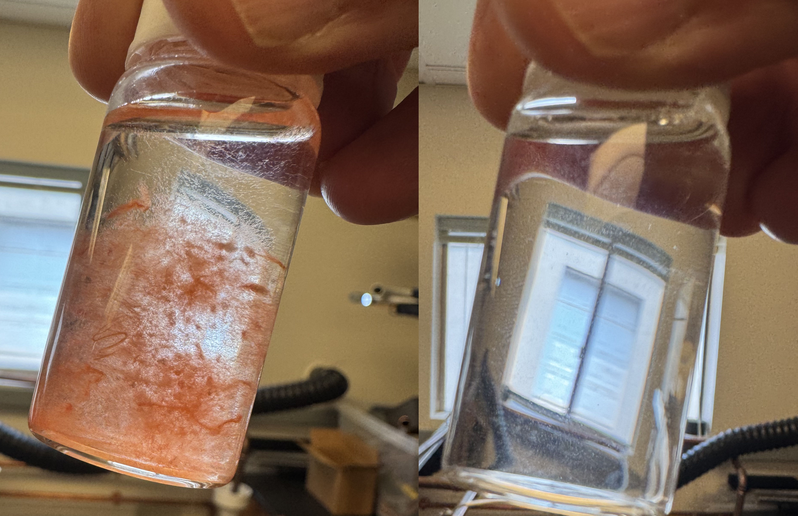
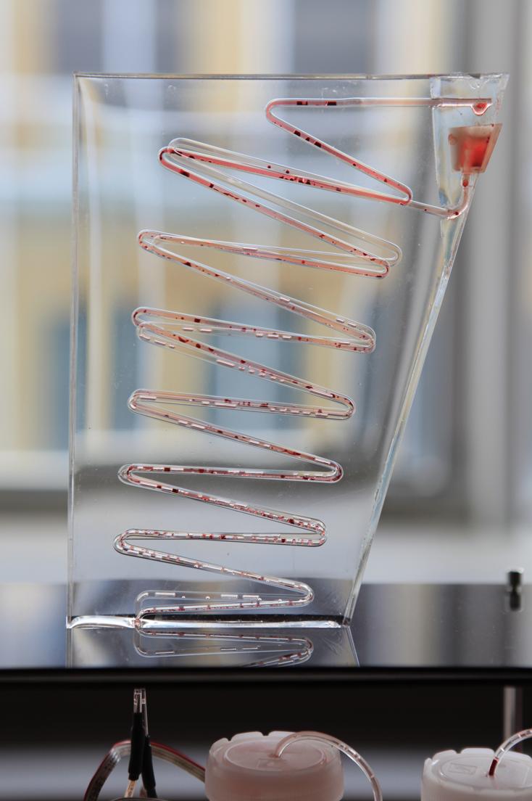

Selected Projects

Wastewater Intelligence
Developing a scalable wastewater analytics framework built on Moby’s novel filtration platform. Industrial and residential wastewater analytics is one of the next frontiers for understanding consumer behavior, material performance, and ecological impact at urban scale. We are developing new models that learn from long-term patterns of use, transforming wastewater into a continuous source of environmental and operational intelligence. The platform interprets wastewater as a dynamic data stream, helping manufacturers identify material losses, optimize production processes, evaluate sustainability metrics, and make more informed operational decisions. Ultimately, we envision wastewater becoming a foundational source of intelligence for monitoring how materials are produced, used, degraded, and returned to the environment.

AI Designer, Farmer, CFO
Developed a multi-agent AI decision-intelligence platform that uses role-based agents—Designer, Farmer, and CFO—to model trade-offs between performance, process efficiency, and cost across complex manufacturing workflows. Beyond interactive demos, the framework integrated retrieval-augmented generation (RAG) for technical and market intelligence, AI-based compliance validation for safety and sustainability claims, and evaluation pipelines to benchmark outcomes against engineering and financial KPIs. Users employed the platform to interpret sensor data, optimize production parameters, validate assumptions, and perform techno-economic analyses in real time. The project demonstrated how agentic, transparent analytics systems can enable cross-functional teams to make evidence-based decisions and accelerate the path from research to scalable products.
Read publication:
Biotechnology Design

Ecovative Foundry
From 2021 to 2023, I led the development of Ecovative’s Mycelium Foundry—the first high-throughput R&D platform dedicated to cultivating and characterizing fungal biomaterials. The Foundry integrated custom hardware, automated cultivation chambers, and real-time sensing systems to enable controlled growth, parameter sweeps, and longitudinal studies of material performance. We designed AI-assisted experiments across substrate, strain, and environmental variables, generating large-scale datasets used to train predictive models and inform downstream scale-up. The platform became central to Ecovative’s material innovation pipeline for food and textile applications.

Mycelium Compute Chip
Funded by the DARPA Biological Technologies Office’s AIxBIO initiative in 2024, I led the R&D on a mycelium-based compute chip that explores the conductive and morphological properties of fungal tissue as an analog computational substrate. By tuning growth conditions and dopant uptake, we engineered living and post-growth mycelium to function as physical reservoir computers, capable of transforming temporal signals for machine learning tasks. The project combined materials engineering, biofabrication, and neuromorphic design to prototype a new class of biologically derived inference systems.
Read publication:
Scientif Reports


Enterprise Resource Management
I led Ecovative’s Data Systems and Intelligence team in building a custom enterprise resource management platform to support scaled mycelium manufacturing. The system integrated resource planning, treatment scheduling, harvest tracking, and quality control reporting into a unified data infrastructure. It enabled real-time visibility across operations, standardized production protocols, and supported traceability across substrates, recipes, and material outcomes.


Control Systems for Scaled Mycelium Production
I developed custom sensing and control systems to automate mycelium cultivation at industrial scale. Designed hardware-integrated platforms with environmental sensors, actuators, and cloud-based SCADA infrastructure. Built real-time data pipelines and dashboards for remote monitoring, predictive analytics, and process reproducibility across Ecovative’s global farm network.
Patent-pending:
US20250176479A1
US20250179413A1


Material Performance
Between 2024-2025, I directed Ecovative’s Material Testing Lab, overseeing data collection on mechanical performance, quality metrics, and downstream processing to align with client CTQ criteria. Developed novel testing protocols for mycelium uniformity and managed recipe-linked inventory and process traceability.


Portable Bioreactor
In 2018, I led the development of Biorealize’s B | reactor—a portable modular biomanufacturing platform that combines incubation, sensing, actuation, and cloud-based control for microbial prototyping. Designed for fast iteration in synthetic biology and fermentation, the B|reactor has been used in brewing fermentation Q/C, materials and bacterial dye innovation, and educational programs.
Patented: US20210340479A1

Microbial Design Studio
I co-founded Biorealize in 2015 and led the design of a closed-loop, automated biofabrication platform for engineering, culturing, and testing genetically modified organisms. The system integrates core wetlab processes—transformation, incubation, lysis, and purification—into a compact hardware–software stack, enabling combinatorial experimentation and predictive, model-based hybrid workflows for synthetic biology. The platform was tested with PUMA and MIT Design Lab for material innovation.
Patented: US10954483B2

Automated Incubation Platform for Cell-Free Biosynthesis
In 2013, I designed a closed-loop incubation platform for cell-free protein synthesis, enabling the production of functional biomolecules without living cells. As a proof of concept, I developed a fragrance synthesis circuit using DNA that encodes the pathway for farnesol, a key aromatic compound found in sandalwood oil. The DNA was embedded within liposomes together with microbial transcription–translation machinery and triggered to produce the molecule on demand. The project demonstrates the potential for a microfluidic perfumery powered by synthetic biology.